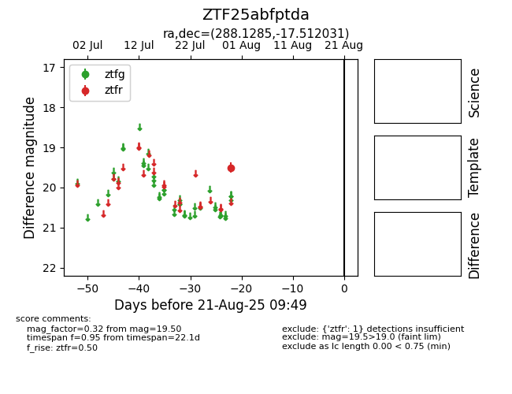

Target ZTF25abfptda at 2025-08-21 09:49, see:
FINK: fink-portal.org/ZTF25abfptda
Lasair: lasair-ztf.lsst.ac.uk/objects/ZTF25abfptda
ALeRCE: alerce.online/object/ZTF25abfptda
alt names
ZTF25abfptda (ztf,alerce)
coordinates:
equatorial (ra, dec) = (288.1285,-17.51203)
galactic (l, b) = (19.4385,-12.42432)
photometry
last ztfr=19.50
1 ztfr detections
